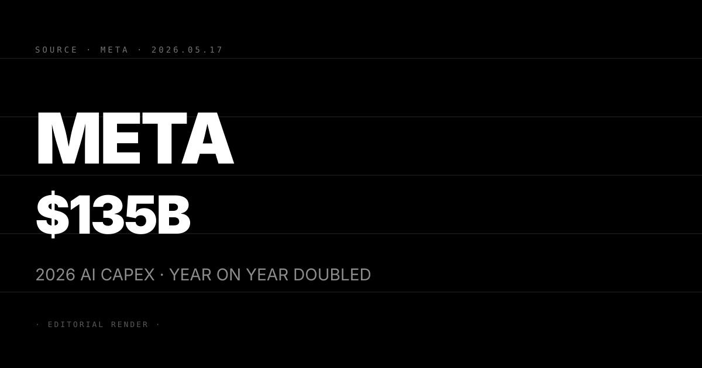
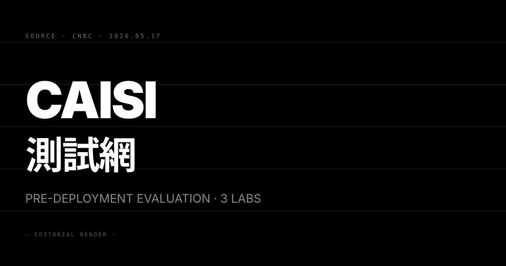
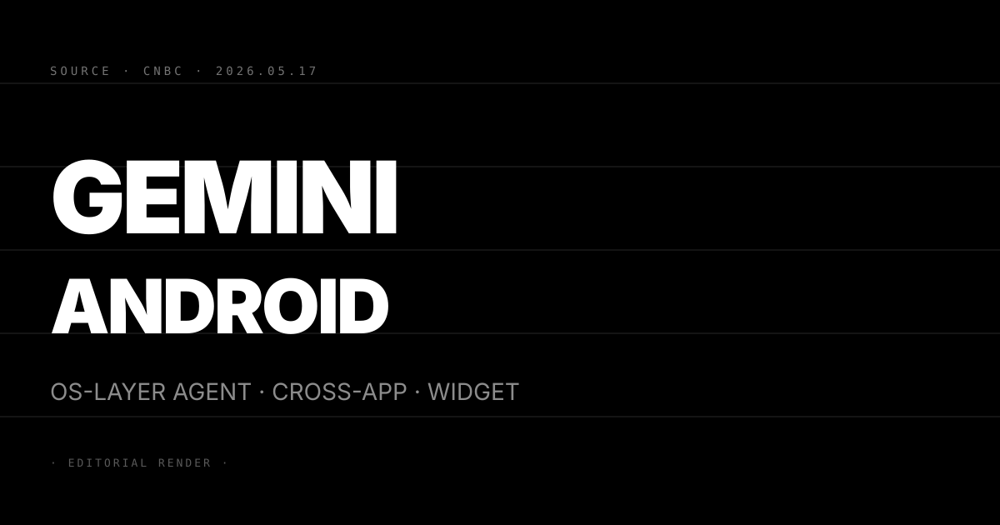
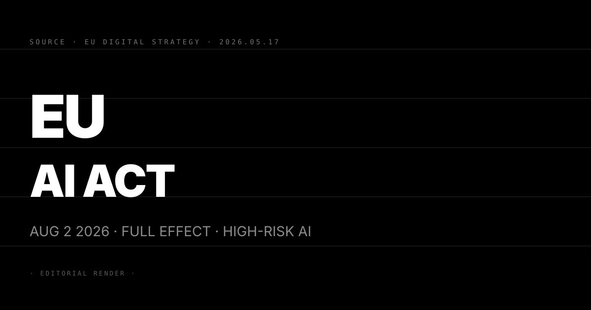

Pin · 算力軍備競賽的門票價格重新定錨 · 1000 億美元以下已非前排席位。
Meta 在 2026 年第一季財報電話會議上公布，全年 AI 基礎建設支出計畫上修至 1150–1350 億美元。相較 2025 年全年約 640 億美元，年增幅接近一倍。這是 Meta 史上最大規模的單年資本支出擴張。
支出重點分三條主線。其一，自建資料中心加速擴張，Meta 在美國多個州推進 hyperscale 資料中心新建計畫，部分站點預計 2026 年底前上線。其二，自研晶片 MTIA（Meta Training and Inference Accelerator）第二代放進部分推論工作負載，試圖分散對 NVIDIA GPU 的依賴。其三，Llama 4 系列的訓練算力需求大幅拉升，多模態能力的加入讓訓練資源消耗比前代高出數倍。
CEO Mark Zuckerberg 在電話會議上明確說：「現在不夠積極投入，才是更大的風險。」這句話概括了 Meta 對算力競賽的定性——放慢等於落後，沒有穩中求進的空間。
第一，hyperscaler 級 AI 競爭的門票價格已經重新定錨。2025 年業界把 500–700 億美元的年度 capex 視為「認真玩家」標準。2026 年 Meta 把這條線上移到 1000 億美元以上。Google、Microsoft、Amazon 的資本支出方向一致，這條算力斷層將在今年 H2 加速中型 AI 廠商的整合或出局。
第二，自研晶片比重上升對 NVIDIA 的採購節奏產生結構影響。MTIA 第二代並非要取代 NVIDIA，而是把推論工作負載分流。Meta 是全球最大的 NVIDIA GPU 採購方之一，部分推論分流意味著 NVIDIA H200 和 B200 採購成長率在 Meta 這個客戶身上會開始放緩。這是 NVIDIA 在 2026 Q3 財報中需要解釋的變數。
第三，Meta 的 AI 業務已出現可量化的 ROI。廣告精準投放靠 Llama 系列模型做用戶意圖建模，Q1 廣告 CPM 提升幅度超過預期。Llama API 商業授權在企業端開始有合約進帳。這兩條 ROI 訊號讓巨額 capex 擴張有業績支撐，而非純押注未來。
三個看點：
(1) 其他主要 hyperscaler 的 Q2 財報指引方向一致。Google、Microsoft、Amazon 在 Q1 已相繼上修 AI 基礎設施支出。算力軍備競賽在 2026 年沒有見頂的客觀跡象，但任何一家廠商的 AI 業務 ROI 不達預期，都可能在 Q3/Q4 引發市場對整個賽道的重估。
(2) 中型 AI 廠商的算力資本斷層加速行業整合。Cohere、AI21、Mistral 在算力維度上的競爭壓力已高度不對稱。這條斷層在 2026 H2 將以「被大廠收購」或「垂直化聚焦單一場景」兩種路線分流，不太可能有廠商靠融資繼續維持全模態競爭。
(3) 反方觀點：Meta AI 廣告 ROI 的可量化性仍在早期。Llama API 的企業授權收入規模尚未公開，廣告 CPM 提升也可能有宏觀因素貢獻。若 Llama 商業化進度落後於預期，1350 億美元的 capex 在 2027 Q1 可能被市場打上問號。

Pin · 美國 AI 自願性審查框架的基礎設施實質完工 · 五家前沿廠商全部進場。
美國 Center for AI Safety Infrastructure（CAISI）宣布與 Google DeepMind、微軟、xAI 簽署預部署評估協議（pre-deployment evaluation agreements）。這延伸了 CAISI 在 2025 年底與 OpenAI 和 Anthropic 建立的合作框架。
協議內容涵蓋兩個維度。其一，前沿 AI 模型在正式對外推出前，須向 CAISI 提交能力評估資料，由 CAISI 與政府研究人員共同進行資安與能力邊界審查。其二，雙方共同開展 AI 能力與風險的開放性研究，成果部分公開。評估週期預計 4 至 12 週，視模型能力複雜程度而定。
五家廠商全部納入後，CAISI 的評估網已覆蓋目前公認的所有主要前沿模型開發者。CNBC 的報導同時指出，此協議框架明確借鑒英國 AI Safety Institute（AISI）模式，但屬自願性（voluntary）而非強制性法規。
第一，美國 AI 上市前審查的事實標準已確立。五家主力廠商全數簽約，等於行業用腳投票承認「上市前評估」為可接受的規範。過去兩年業界爭論「是否需要政府評估」，今天這個問題在實踐層面已有答案。
第二，Anthropic 的 Mythos 困境有了正式出口。白宮目前反對 Anthropic 將 Mythos 的 preview 從 50 家擴大到 120 家（5/7 N°52）。CAISI 評估框架提供一條「評估通過後正式開放」的合規路徑。對 Anthropic 而言，這既是解套工具，也是新的合規時間成本。
第三，xAI 用一紙協議同時維持兩個身份。xAI 正在向算力 neocloud 轉型（5/7 N°51），但簽署 CAISI 協議讓它保住「前沿 AI 廠商」的政策身份。這對 SpaceX 的 IPO 敘事是直接加分——投資人看到的是一家同時有算力合約收入和政府 AI 安全認可的公司。
三個看點：
(1) CAISI 評估週期對前沿廠商的新模型上線節奏形成結構性延遲。4 至 12 週的預審窗口意味著一年最多 4 至 13 次大版本迭代機會。對過去靠「快速迭代 + 線上修正」建立優勢的廠商，這是節奏上的永久性調整。
(2) 五廠全部進場讓新進者的門檻被動提高。下一家嘗試進入前沿市場的廠商（如 xAI 分拆出來的子公司、或中國廠商在美分部），若不加入 CAISI 框架，會在政府採購和企業合規審查中處於不利位置。
(3) 反方觀點：自願性框架沒有法律牙齒。CAISI 沒有強制力，任何廠商可以在評估期間繼續推進部署而不承擔法律後果。框架的真實效力取決於政府採購條款和企業客戶的合規要求——法律外的社會壓力能否替代正式執法，是這個框架能否長期維持約束力的核心疑問。

Pin · Google I/O 後首個系統級落地 · 手機作業系統從 App 啟動器變成 agent 執行環境。
Google 在 Google I/O 2026 後約一週，正式對外推送 Gemini 的 Android 深度整合更新。這是 Android 歷史上第一次把 AI agent 能力植入 OS 層而非作為獨立 App 存在。
Android 端的三項核心功能：其一，跨 App 多步驟代理——用戶可以用自然語言指令觸發跨應用任務，如「幫我找附近評分最高的餐廳並寄電子郵件給同事」，Gemini 負責協調地圖、Email、行事曆三個 App 完成任務。其二，表單自動填寫——Gemini 讀取頁面情境後自動建議並填入對應欄位。其三，主畫面 AI widget——用戶可在主畫面放置 Gemini widget，顯示個人化資訊摘要（新聞、行程、待辦）。
Chrome 端同步更新：網頁情境摘要（Gemini 讀完整頁後給三句重點）、即時翻譯、多分頁任務追蹤。Google 內部測試數據顯示，使用 Gemini 輔助的研究任務完成時間平均縮短 25%。
第一，手機作業系統的競爭軸從「App 數量」轉向「agent 執行效率」。跨 App 代理功能意味著用戶不再需要逐一開啟 App，整個操作流程由 Gemini 協調。對 App 開發者的流量分發邏輯是結構性衝擊——用戶在 App 內停留的時間將被 agent 層縮短。
第二，搶在 Apple AI 改版前鎖定敘事制高點。Apple 的完整 AI 整合功能預計要到 WWDC 2026（6 月）後才鋪開。Google 以兩週領先窗口推出「Android AI 手機」，搶先建立用戶感知。即使 Apple 稍後推出更完整的整合，「Gemini 先跑」的媒體曝光已完成。
第三，Chrome 成為桌面端的第二個 agent 入口。Gemini 在 Chrome 的情境摘要讓桌面瀏覽也成為 agent 接入點，覆蓋 Android 手機以外的非 iOS 用戶。這讓 Google 的 agent 生態從移動端延伸到桌面，形成跨裝置的統一 Gemini 體驗層。
三個看點：
(1) 跨 App 代理的落地品質決定成敗。Google 過去的 Duplex、Google Now 在 demo 中表現優異，但真實用戶場景的可靠性不足導致採用率偏低。Gemini 多步驟任務能否維持 90% 以上完成率，是這波整合能否形成真實使用者黏性的核心。前三個月的用戶反饋數據是關鍵觀察視窗。
(2) 第三方 AI App 的觸及深度面臨系統級限制。Gemini 佔據 OS 層後，ChatGPT、Claude App 等第三方 AI 應用在 Android 上的功能深度受到先天限制——它們無法做到 OS 層跨 App 協調。對 Anthropic 和 OpenAI 的手機端策略，這是需要正視的結構性不利因素。
(3) 反方觀點：Android 生態碎片化嚴重，全球推及需要 12–18 個月。Gemini 深度整合初期只覆蓋 Pixel 系列和部分採用 Android 14/15 的 OEM 裝置。全球 Android 裝置中舊版本基數龐大，功能真正觸達多數用戶需要超過一年的 OTA 更新週期。短期內「Gemini Android」的體驗僅屬 Pixel 用戶福利。

Pin · 78 天倒數 · 歐盟 AI Act 不再是未來式 · 影響評估與透明度義務從 8 月 2 日生效。
歐盟議會 5 月 7 日達成 AI Act 簡化修正案的政治協議。修正核心是簡化中小企業的合規流程，同時調整部分高風險系統的定義範圍。更關鍵的時間訊號是確認：2026 年 8 月 2 日，AI Act 正式全面生效。
從今天（5 月 17 日）算起，只剩 78 天。高風險 AI 系統開發者在生效後的強制義務包括：進行影響評估（impact assessment）、執行非歧視性審查、提交透明度報告、建立人類監督機制。被列為高風險的場景清單涵蓋範圍廣泛：招募系統、信用評分、執法輔助、醫療診斷、關鍵基礎設施管理。
5 月 7 日的簡化修正案針對一個長期爭議點做出調整：通用目的 AI（GPAI）模型的義務範疇。修正後，訓練算力低於特定閾值的 GPAI 不再被自動列入最高管制層級，但高能力前沿模型的義務未受影響。
第一，8 月 2 日是真實的全面生效日，不是緩衝期延長。過去兩年業界預期歐盟可能持續推後執行時間。5 月 7 日的政治協議明確鎖定日期，讓所有在歐盟運營的 AI 廠商必須在 78 天內確認合規狀態。等待觀望已不可行。
第二，大量企業 AI agent 部署場景落入管轄範圍。Anthropic Claude for Legal、Google Gemini for Healthcare、微軟 Copilot 在執法機構的部署，都可能被認定為高風險系統。歐洲企業客戶的 AI 採購流程必須加入合規審查環節，這直接延長採購週期。
第三，歐盟與美國框架的分歧加深，形成雙重合規成本。美國 CAISI 是自願性框架，沒有罰款機制。EU AI Act 的最高罰款是 3500 萬歐元或全球年營收的 7%（取較高者）。跨大西洋運營的 AI 廠商面臨兩套要求不同的框架，合規成本加倍。
三個看點：
(1) 歐洲 AI 產品上線節奏在 8 月後面臨強制窗口期。預計 6–7 月歐洲 AI 廠商加速提交合規文件，部分功能推出主動延後到評估完成後。對 Anthropic 和 OpenAI 的歐洲 B2B 合約，影響評估附件將成為標配條款，增加談判與交付週期。
(2) 前沿廠商的歐洲市場策略需要重組。OpenAI 歐洲辦公室在都柏林，Anthropic 在倫敦（英國不受 AI Act 約束）。在歐盟境內提供高風險 AI 服務的廠商，無論總部在哪裡都適用義務。預期主要廠商在 6 月前公開其歐盟合規路線圖，以維持歐洲企業客戶的信心。
(3) 反方觀點：AI Act 執法能力是長期疑慮。歐盟各成員國監管機構的技術能力與執法資源參差不齊。法規生效和有效執法是兩件事。初期實際懲罰案例可能稀少，這會讓部分廠商選擇觀望。但合規文件義務從生效第一天起就是法律要求，即使罰款沒落下，稽核紀錄的缺失仍是長期風險。